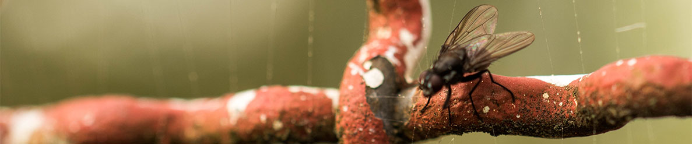

Sobre Fotografía Cotidiana
¡Caminamos la ciudad y el campo...!
La cámara que va al son del caminar y dispara con precisión donde advierte diferencias, cotidianidad, quietud, movimiento... En los diferentes entornos.
“Si pudiera decirlo con palabras, no iría todos los días cargado con mi cámara”. Lewis Hine
Nuestra ubicación
Nuestro centro de ideaciones está ubicado en el centro de la ciudad
Tópicos
- Caminar
- Observar
- Extraer
- Disparar
¿Quieres acompañarnos y caminar al son de la fotografía? "Contáctanos"